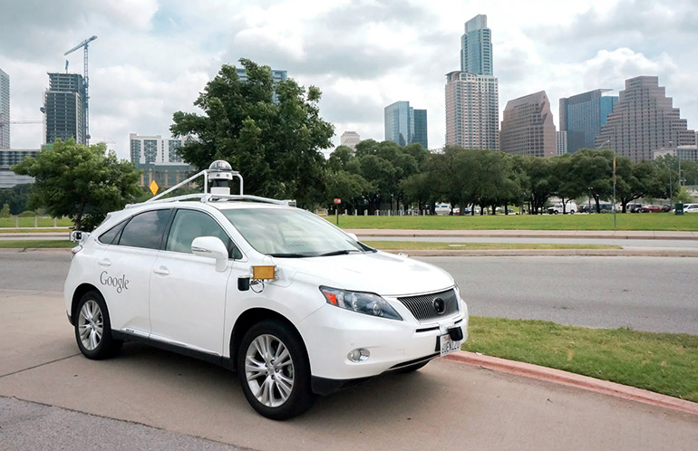

Voiture autonome : les constructeurs passent la seconde vitesse
Publié le 3 mai 2025
Waymo déploie ses robotaxis à Austin
Innovation longtemps fantasmée dans les films rétro-futuristes des années 80, la voiture autonome s’impose aujourd’hui comme l’un des piliers les plus ambitieux de la mobilité moderne...
Waymo et Toyota : un partenariat stratégique
Waymo, filiale d'Alphabet (Google), a annoncé une collaboration avec Toyota...
D'autres constructeurs sur la ligne de départ
Si Waymo occupe le devant de la scène...
Quels enjeux pour demain ?
Au-delà des performances techniques, les véhicules autonomes posent des défis majeurs...